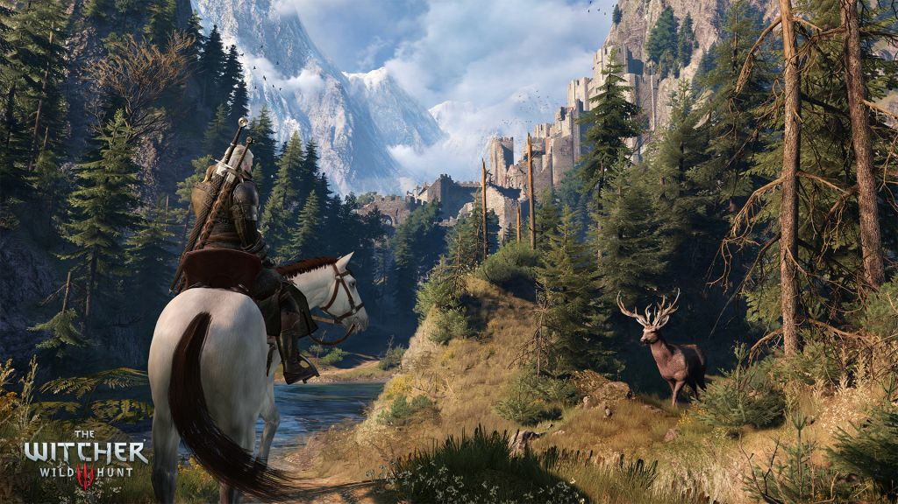

Current Popular Video Games
Fallout 4

The game is set in a post-apocalyptic Boston in the year 2287, 210 years after a devastating nuclear war. The player character emerges from an underground nuclear fallout shelter known as Vault 111, and subsequently explores the world, completes various quests and acquires experience points to level up their character. It is the first game in the series to feature full voice acting for the protagonist.
Rocket League

Described as "soccer, but with rocket-powered cars", Rocket League has up to eight players assigned to one of two teams, using rocket-engine equipped vehicles to push a ball into their opponent's goal and score points over the course of a timed match. The game includes single-player and multiplayer modes which can be played both locally and online, including cross-platform play between the PlayStation 4 and Microsoft Windows versions, as well as cross-play between Xbox One and Windows versions. Later updates for the game enabled the ability to modify core rules and adding new game modes, including ones based on ice hockey and basketball.
Witcher 3

Played in a third-person perspective, players control protagonist Geralt of Rivia, a monster hunter known as a witcher, who sets out on a long journey through the Northern Kingdoms. In the game, players battle against the world's many dangers using swords and magic, while interacting with non-player characters and completing side quests and main missions to progress through the story.